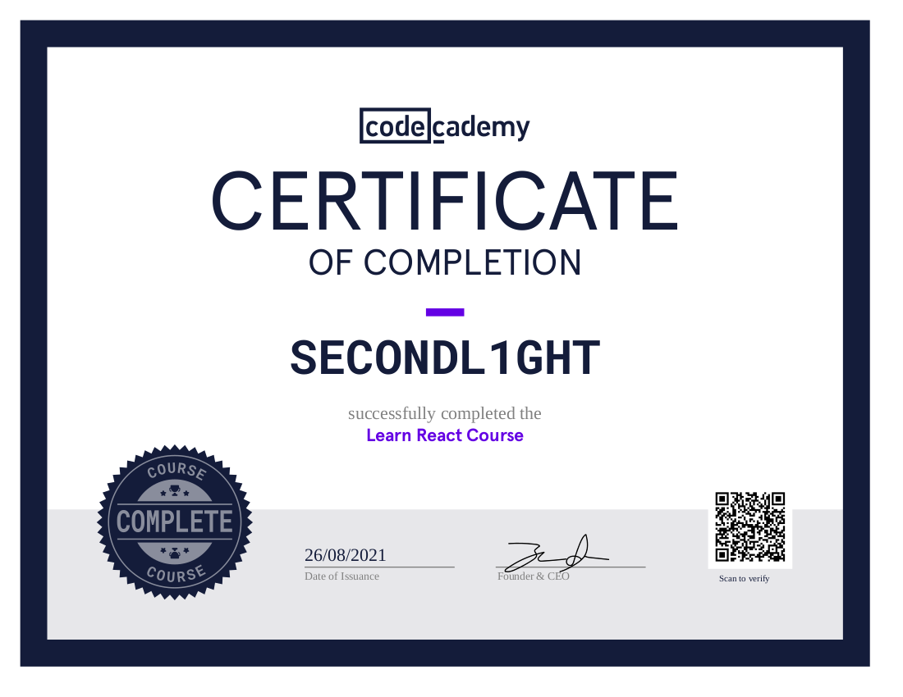

About Me
An aspiring front-end web developer pursuing passions...
Hello and thank you for taking the time to look over my portfolio! My name is SECONDL1GHT, I care about privacy and therefore prefer to go by a pseudonym online. :) I currently have a successful career in a totally different field (forestry). However, I am hoping to pursue a new found passion and expand my freedom by becoming a front-end web developer. During the summer of 2020 I discovered bitcoin and it completely changed my life in so many ways. One of which is that it prompted me to give coding a try. After discovering how much I enjoy coding, I now want to contribute to open-source projects and my goal is to work for a freedom-focused company full-time. I hope you like what you find on my website. I believe that with the support of experienced developers, I have the drive, mindset and approach to learning required to become a great front-end dev. Joining an exciting team of like-minded individuals that are building the future would be a dream come true. Outside of coding I enjoy hiking, snowboarding, riding my motorcycle, paddleboarding, campfires with friends and family and jumping into lakes. Please feel free to review my code for this website and all of my projects on GitHub .
Skills
- HTML5
- CSS3
- JavaScript
- React / React Native
- Vue.js
- Node.js
- Git
- Markdown
- TDD
- Linux
 TypeScript
TypeScript
Future Skills
- Bootstrap
 Redux
Redux- And More!
Learning
I am currently enrolled in and close to completing the Codecademy Front-End Engineer Career Path, which is how I have earned most of my certificates displayed below. I have also taken additional courses not covered in the career path to increase my knowledge and skills. I will display my learning certificates here as I receive them.
Certificates
Front-End Engineer Career Path CertificateHTML
Learn HTML Certificate
CSS
Learn CSS Certificate
JavaScript
Learn JavaScript CertificateLearn Asynchronous JavaScript Certificate

How to Debug JavaScript Errors Certificate

Learn JavaScript Unit Testing Certificate

TypeScript
Learn TypeScript CertificateReact
Learn React Certificate Vue.js
Learn Vue.js CertificateDesign
Learn Responsive Design Certificate
Learn Navigation Design Certificate

Learn Color Design Certificate

Continuous Learning
Additional courses that I am enrolled in and plan on completing after my career path are Learn Bootstrap and Learn Redux. I am also reading books related to web development and following a variety of online resources to stay current on the latest progress in the field.
Projects
Live In Progress Not Started
Block Date Computer
HTML CSS JavaScript
This web app uses bitcoin blockchain data to retrieve timestamps and interesting bitcoin trivia for users. It can be used for fun or if you need to find out exactly when a block was mined.
Random Reddit
HTML CSS JavaScript ReactRandom Reddit is a React web app that returns randomly selected subreddits and posts. It is a fun website that users can enjoy if they want a straightforward interactive experience and help finding new content on Reddit that they may be interested in.
BTC Price Watch
React Native Expo JavaScriptA bitcoin price app for Android and IOS written with React Native. With this app you can get live bitcoin prices in multiple fiat currencies, you can also use the calculator to see a bitcoin amount valued in fiat. Simply select a currency and click a button to get live prices, enter a bitcoin amount in the calculator to get live conversion rates.
Bitcoin Recommendations
HTML CSS JavaScript ReactThis website is a curated list of bitcoin hardware, software and resources that I have found useful and would like to share. New and experienced users may find information of interest, this will hopefully serve as a helpful contribution to the bitcoin community.
Privacy Tech Resource
HTML CSS JavaScript ReactA collection of useful privacy technologies to help protect your data and identity in the digital age. Visitors can find information about how to better improve their privacy online. This is a sister site to Bitcoin Recommendations and the information on both sites pair nicely together.
30daytheory
HTML CSS JavaScript
A travel inspiration website where you can create a list of destinations and randomly generate your next trip. You can also follow links to start researching your selected destination. This project was created as freelance work, the client wanted me to create a site based around their idea of '30daytheory'.
Open Source

Currently taking part in Hacktoberfest 2021!
All of my projects are open source, I also enjoy contributing to open source repositories in my spare time. I believe it is the best method for development and love how the global community and brightest minds come together to build amazing projects. You cannot stop an idea whose time has come and you cannot stop open source code!
Here are some select open source projects that I have contributed to:
Loading...
Contact
Thank you again for visiting my portfolio, I welcome any feedback or opportunities you may have. If you would like to contact me, please send me a message on Discord @secondl1ght#9164 or by e-mail at secondl1ght@protonmail.com, I would love to hear from you!